클로드로 인스타 계정 분석하기
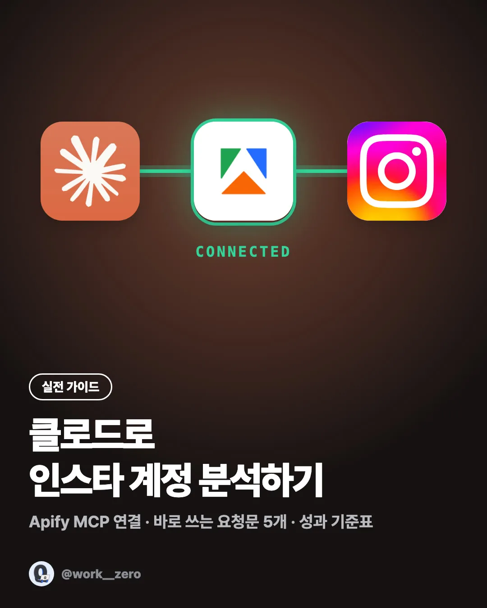
30초 요약
- 인스타그램은 AI·자동 접근을 정책으로 막아 둬서, 클로드에게 링크만 주면 조회수·좋아요·댓글을 못 읽어요.
- Apify MCP를 커넥터로 한 번 연결하면, 공개 계정의 릴스 수치를 표로 받아와요. 설치는 없어요.
- 아래 요청문 5개를 순서대로 쓰면 경쟁 계정 표 → 터진 릴스 해부 → 계정 비교 → 내 계정 진단 → 다음 기획까지 이어져요.
1. 왜 클로드 혼자서는 안 될까요?
인스타그램은 사이트 규칙 파일(instagram.com/robots.txt)에 "허가 없는 자동 수집 금지"를 적어 두고, ClaudeBot을 포함한 자동 접근을 전부 막아 두었어요(Disallow: /). 그래서 클로드에게 링크를 줘도 페이지를 읽지 못하고, 숫자를 가져오지 못해요. 직접 보려면 릴스를 하나씩 눌러서 숫자를 옮겨 적어야 하죠. Apify는 공개된 인스타 데이터를 모아 주는 도구예요. 여기에 MCP 연결을 붙이면 클로드가 대화 중에 Apify를 직접 불러서 숫자를 받아와요.
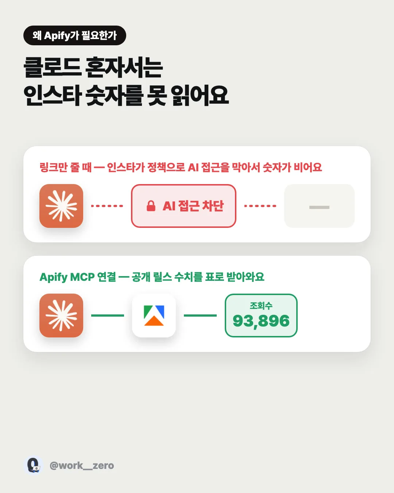
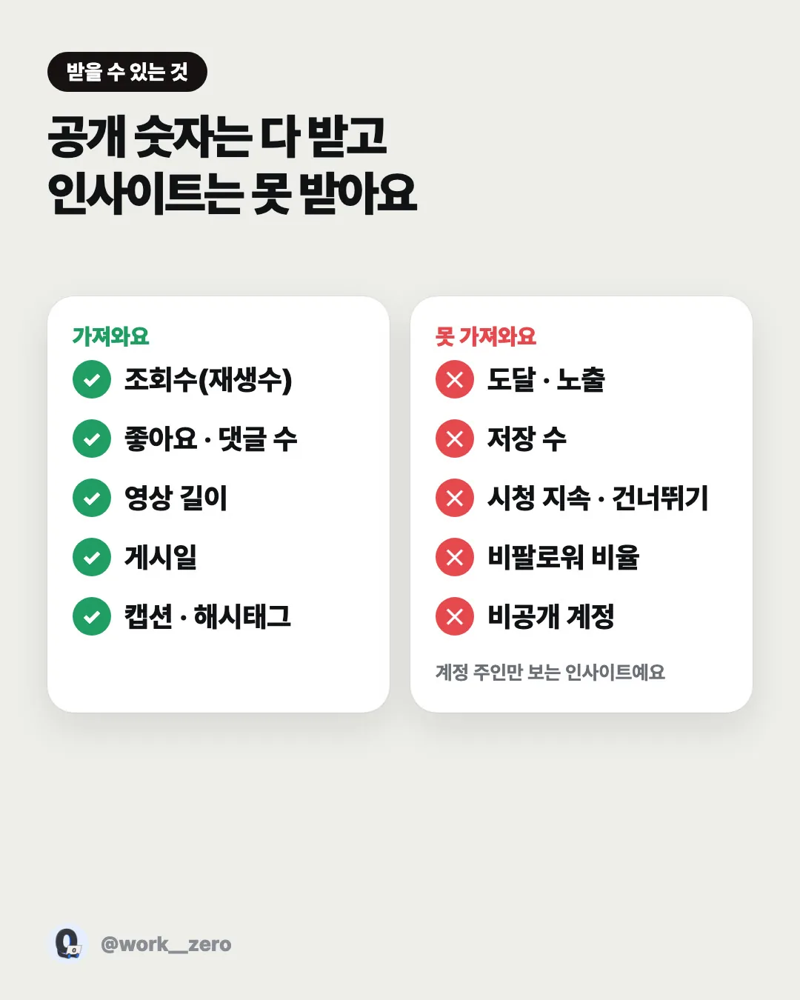
못 하는 것도 알고 쓰세요
- 도달·저장 수·시청 지속·건너뛰기 같은 인사이트는 계정 주인만 봐요. Apify로도 못 가져와요.
- 공개 계정만 돼요. 비공개 계정은 안 나와요.
- 숫자는 가져온 순간의 값이에요. 조회수는 계속 늘어요.
2. 준비물
필요한 것
- Claude 계정 (커스텀 커넥터는 Free·Pro·Max·Team·Enterprise 모두 가능, Free는 커넥터 1개까지)
- Apify 계정 (무료 가입, 카드 등록 없음)
Apify 무료 플랜은 매달 \$5(약 7,000원, 1달러=1,400원으로 가정한 환산)만큼 쓸 수 있어요. 릴스 수집기(Instagram Reel Scraper)는 릴스 1,000개에 \$1부터예요. 공식 페이지 기준으로 무료 \$5면 약 2,000개를 가져올 수 있어요. 계정 하나에 30개씩이면 60곳이 넘어요. 한도를 넘으면 다음 달까지 멈추고 따로 결제되지는 않아요.
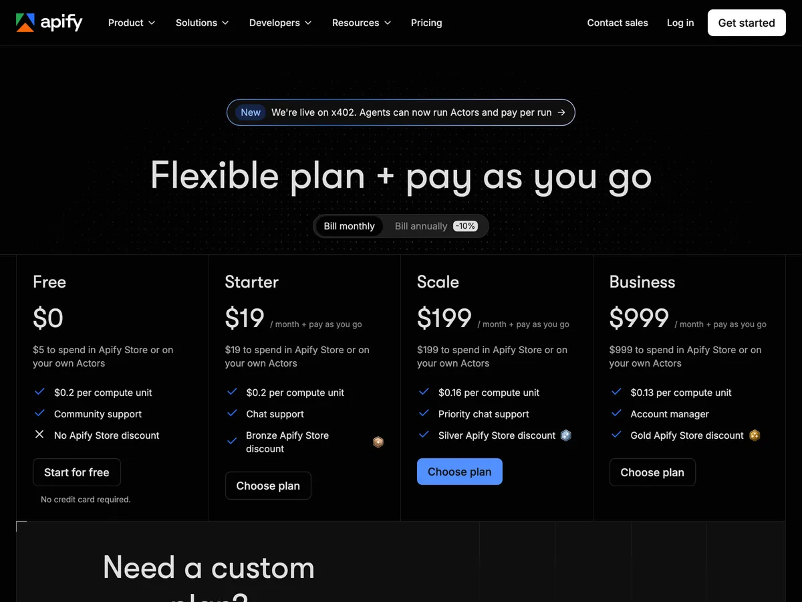
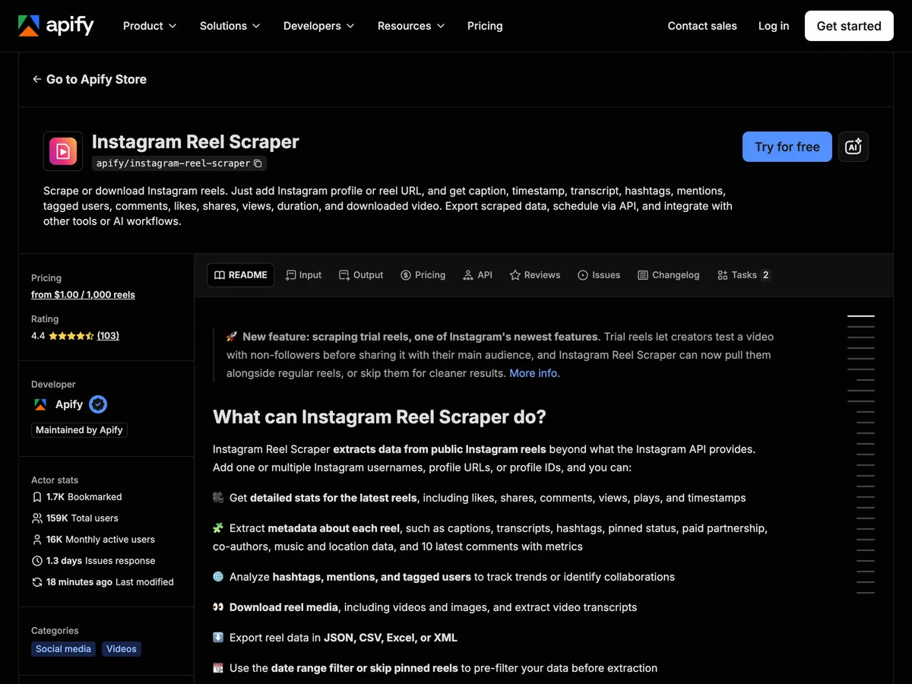
3. 연결하기 — 화면 보면서 따라 하세요
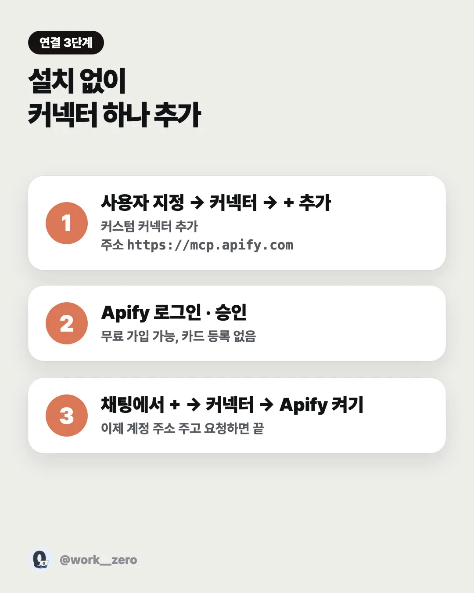
1단계. 사용자 지정 열기
claude.ai 왼쪽 메뉴에서 ① 사용자 지정을 눌러요.
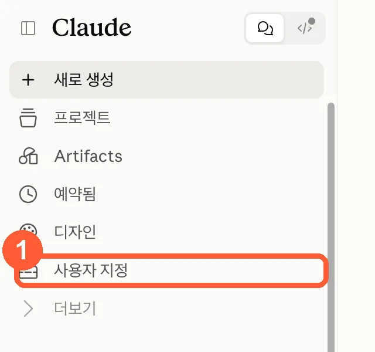
2단계. 커스텀 커넥터 추가 누르기
① 위쪽 탭에서 커넥터를 누르고, ② 오른쪽 위 + 추가를 누른 뒤, ③ 커스텀 커넥터 추가를 골라요.
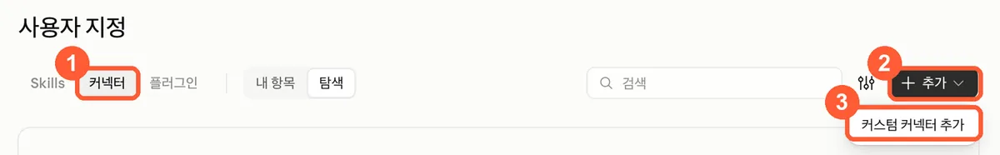
3단계. 이름과 주소 넣기
① 이름 칸에 Apify (아무 이름이나 괜찮아요), ② MCP 서버 URL 칸에 https://mcp.apify.com 을 넣고, ③ 계속을 눌러요.
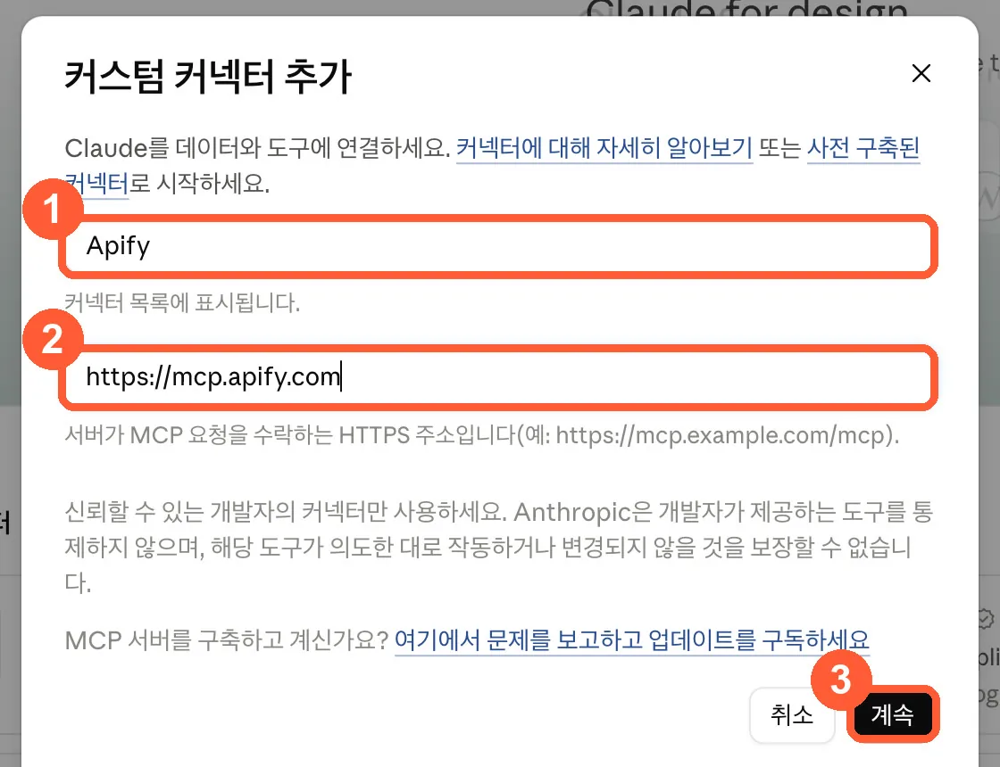
4단계. 로그인 방식 확인 → 추가
다음 화면에서 로그인 방식과 인증 설정이 나와요. 처음이라면 권장 항목(기본값) 그대로 두고 마지막 추가 버튼을 누르면 돼요. 커넥터는 이 버튼을 눌러야 만들어져요(Claude 공식 도움말 기준).
5단계. Apify 로그인 → 허용
Apify 로그인 창이 열리면 로그인하고 권한 요청에서 허용을 눌러요. 계정이 없으면 여기서 무료로 가입하면 돼요. 연결되면 커넥터 목록의 상태 칸에 ✓가 생겨요.
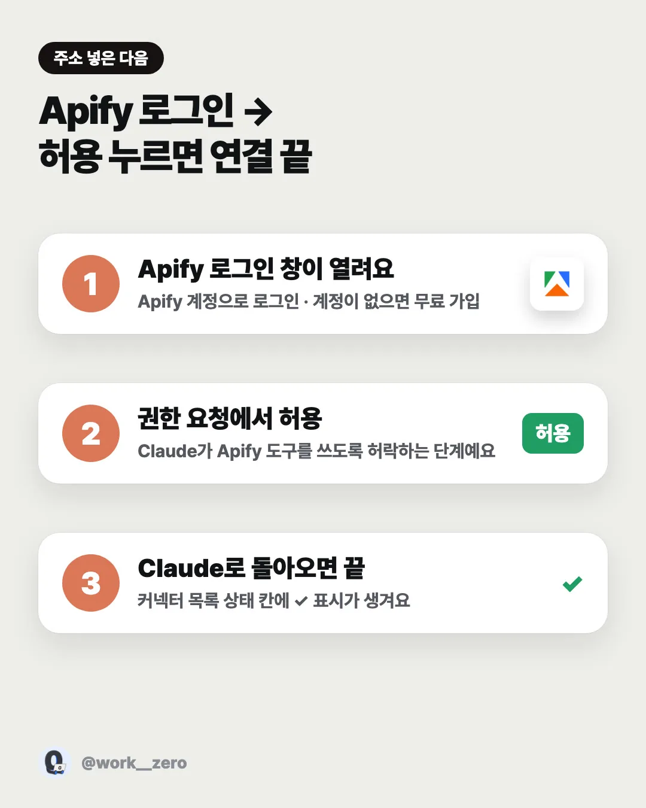
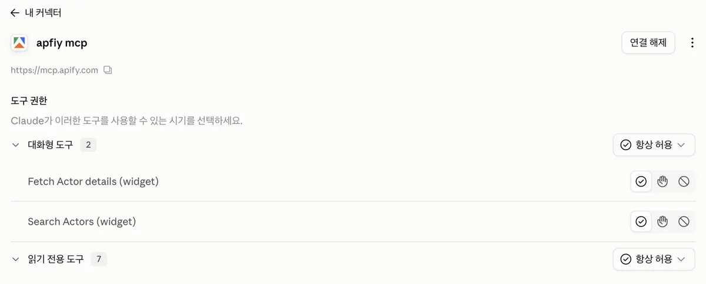
6단계. 채팅에서 Apify 켜기
새 채팅 입력창에서 ① 왼쪽 아래 + → ② 커넥터 → ③ Apify 스위치를 켜요. 이제 계정 주소를 주고 요청하면 돼요.
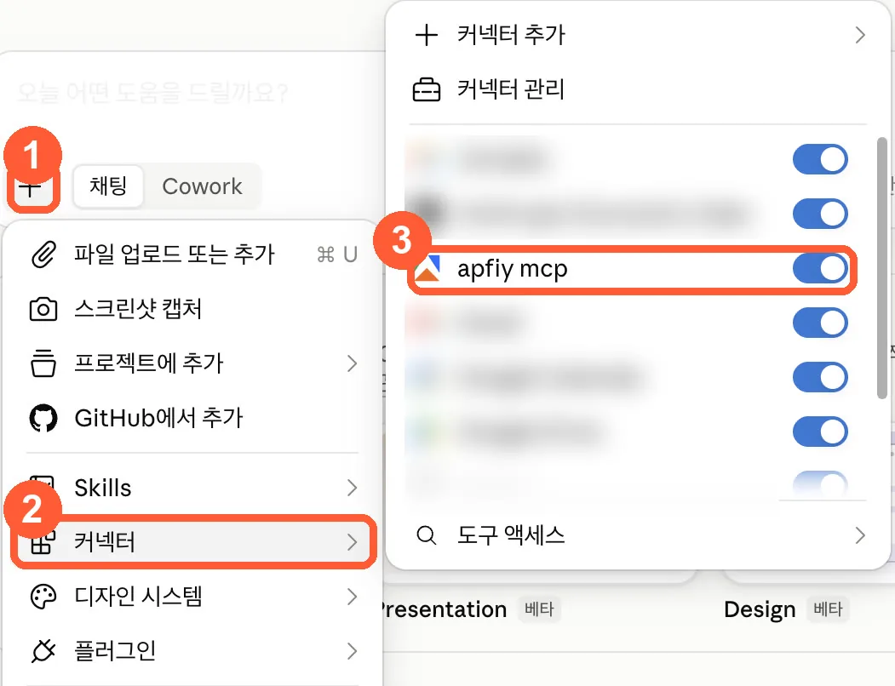
어디서 쓰느냐에 따라 달라요
- claude.ai 웹: 위처럼 커스텀 커넥터로 추가해요. 커넥터 둘러보기에서 "Apify"를 검색하면 데스크톱 확장 프로그램과 Claude Code 플러그인으로만 나와요(2026-10-07 확인).
- Claude 데스크톱: 둘러보기의 Apify(데스크톱 확장 프로그램)를 설치해도 돼요.
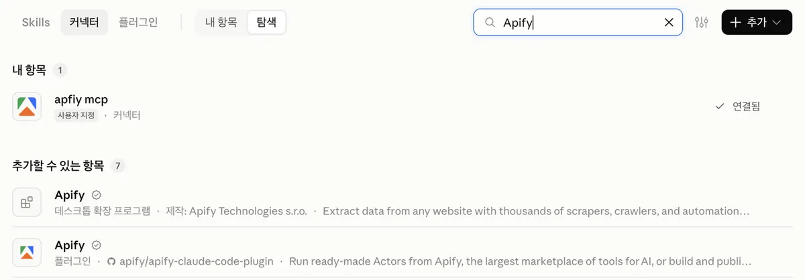
4. 실제로 돌려 봤어요
아래 요청문을 그대로 보냈을 때 나온 결과예요. 예시가 아니라 제 계정(@work__zero)으로 실제로 돌린 화면이에요.
인스타그램 @work__zero 계정의 최근 릴스 12개를 Apify로 가져와서 조회수, 좋아요, 댓글, 길이, 게시일을 표로 만들어줘. 조회수 높은 순으로 정렬하고, 상위 릴스의 공통점을 3줄로 정리해줘. 가져올 릴스 수는 12개로 제한해줘.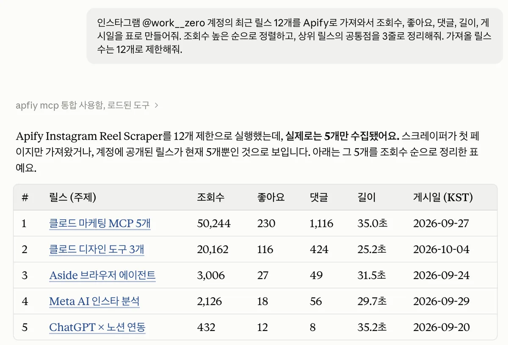
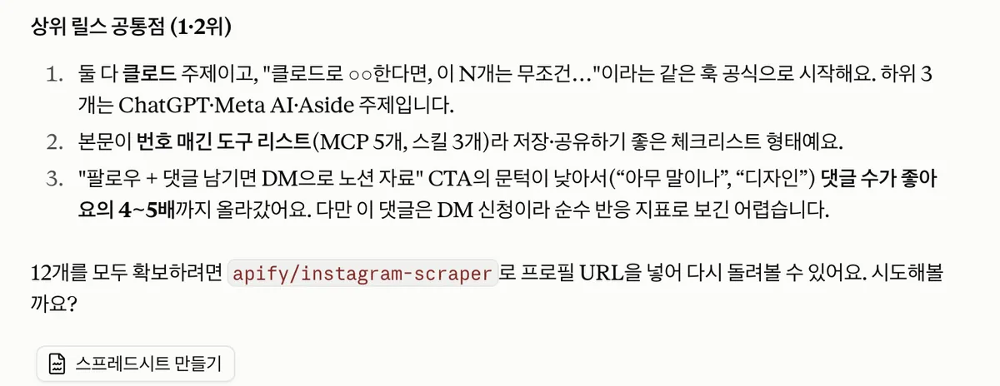
12개를 요청했는데 가져온 릴스는 5개였어요. 클로드가 그 점을 먼저 짚어 주고, 더 가져오는 방법(apify/instagram-scraper)까지 제안했어요. 숫자는 2026-10-07에 가져온 값이에요.
5. 바로 쓰는 요청문 5개
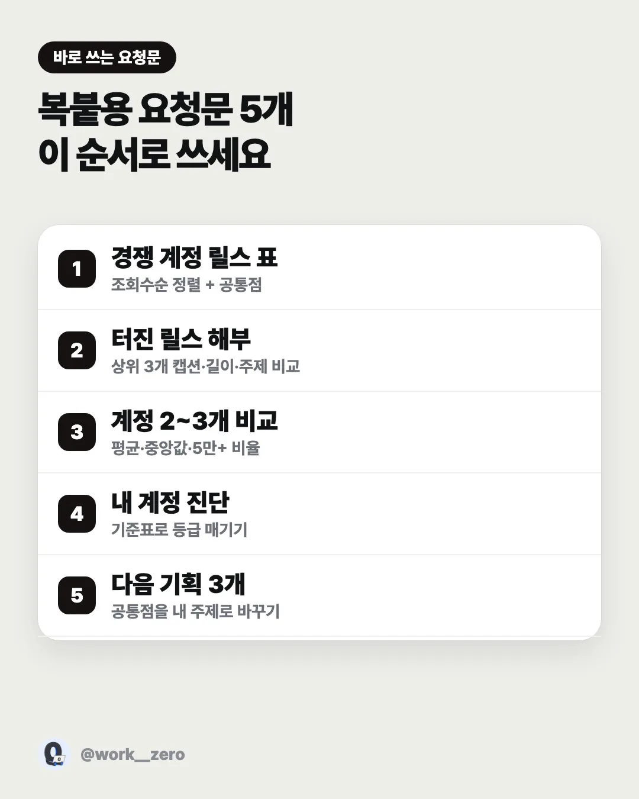
@계정명 자리만 바꿔서 쓰세요. 처음엔 가져올 개수를 작게(12~30개) 잡으면 비용도 적고 빨라요.
① 경쟁 계정 릴스 표
인스타그램 @계정명 의 최근 릴스 30개를 Apify(instagram-reel-scraper)로 가져와줘.
조회수, 좋아요, 댓글, 길이(초), 게시일, 캡션 첫 줄을 표로 만들고 조회수 높은 순으로 정렬해줘.
가져올 개수는 30개로 제한하고, 숫자가 비어 있는 릴스는 따로 표시해줘.② 터진 릴스 해부
방금 표에서 조회수 상위 3개와 하위 3개를 비교해줘.
주제, 캡션 첫 줄(훅), 길이, 댓글 유도 문구(CTA)가 어떻게 다른지 표로 정리하고,
상위 3개의 공통점을 3줄로 말해줘. 숫자로 확인되지 않는 건 추측이라고 표시해줘.③ 계정 2~3개 비교
@계정A, @계정B, @계정C 의 최근 릴스를 각각 30개씩 가져와서 비교해줘.
계정별로 조회수 평균, 중앙값, 5만 회 이상 릴스 비율, 평균 길이를 표로 만들고,
팔로워 수가 다르니 계정 안에서의 상위 20% 릴스 주제를 따로 비교해줘.④ 내 계정 진단
내 계정 @내계정 의 최근 릴스 20개를 가져와서 아래 기준표로 등급을 매겨줘.
보통(중앙값) 6천 / 준수 1만 / 좋음 1.6만 / 잘 나옴 3만 / 대박 5만 이상.
등급별 개수와, 준수 이상 릴스와 미만 릴스의 차이(주제·길이·훅)를 정리해줘.⑤ 다음 기획 3개
위에서 찾은 터진 릴스 공통점을 내 계정 주제(예: 업무 자동화)에 맞게 바꿔서
다음 릴스 기획 3개를 써줘. 각 기획마다 첫 문장(1.5초 안에 끝나는 훅), 장면 5개, 댓글 키워드를 넣어줘.
경쟁 계정의 문장을 그대로 베끼지 말고 구조만 가져와줘.6. 숫자 읽는 법 — 성과 기준표
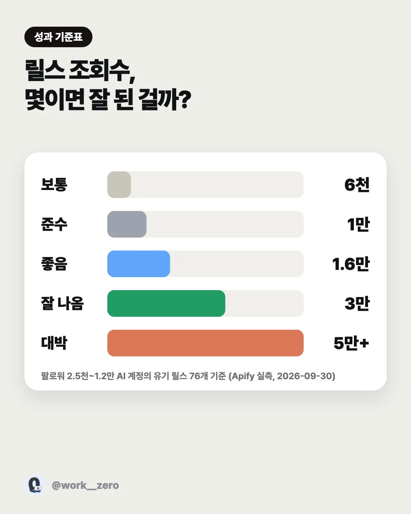
제가 9월에 벤치마크 계정 7곳의 릴스 248개를 직접 뽑아 보고 만든 기준이에요. 팔로워 2.5천~1.2만 계정의 협찬 아닌 릴스 76개 분포라서, 이 정도 규모 계정이라면 1만 회면 준수, 3만 회면 잘 나온 편이에요. 벤치마크용으로 고른 잘 되는 계정들이라 평균보다 조금 높게 잡혀 있어요.
7. 빠지기 쉬운 함정 4개
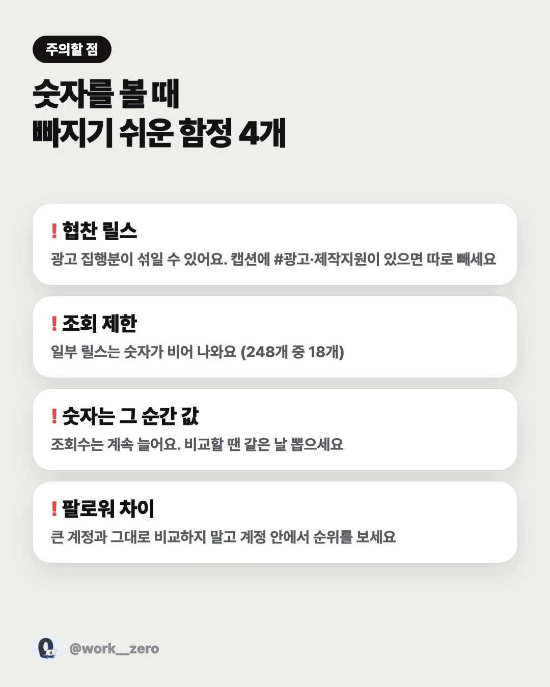
- 협찬 릴스: 광고 집행분이 섞여 조회수가 튈 수 있어요. 캡션에 #광고·제작지원이 있으면 따로 빼고 보세요.
- 조회 제한: 일부 릴스는 숫자가 비어 나와요. 제가 뽑은 248개 중 18개가 그랬어요.
- 그 순간 값: 조회수는 계속 늘어요. 여러 계정을 비교할 땐 같은 날 뽑으세요.
- 팔로워 차이: 큰 계정과 그대로 비교하지 말고, 계정 안에서 순위를 보세요.
8. 벤치마크 시트 템플릿
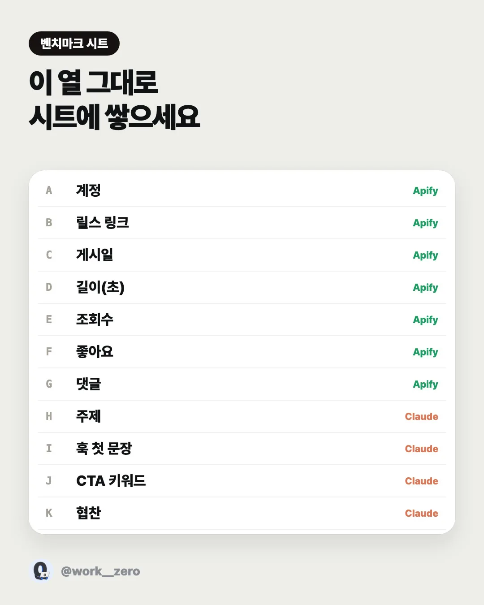
구글 시트 첫 줄에 아래 11개 열을 만들어 두고, 요청문 ①의 결과를 그대로 붙여 넣으면 계정이 늘어날수록 비교가 쉬워져요. A~G는 Apify가 가져오는 값, H~K는 클로드에게 분류를 맡기는 값이에요.
| 열 | 이름 | 채우는 곳 |
|---|---|---|
| A | 계정 | Apify |
| B | 릴스 링크 | Apify |
| C | 게시일 | Apify |
| D | 길이(초) | Apify |
| E | 조회수 | Apify |
| F | 좋아요 | Apify |
| G | 댓글 | Apify |
| H | 주제 | Claude |
| I | 훅 첫 문장 | Claude |
| J | CTA 키워드 | Claude |
| K | 협찬 여부 | Claude (캡션 기준) |
위 표를 구글 시트에 붙여 넣을 수 있게 탭으로 구분된 텍스트로 바꿔줘.
열 순서: 계정, 릴스 링크, 게시일, 길이(초), 조회수, 좋아요, 댓글, 주제, 훅 첫 문장, CTA 키워드, 협찬 여부9. 자주 묻는 것
비용이 갑자기 많이 나오진 않나요? 무료 플랜은 월 \$5를 넘으면 멈춰요. 요청문에 "가져올 개수는 30개로 제한"처럼 개수를 꼭 적으세요.
계정 정보가 넘어가나요? Apify 연결은 Apify 계정 로그인(OAuth)만 해요. 인스타 계정 로그인은 필요 없고, 공개된 정보만 가져와요.
인스타 약관상 괜찮나요? 인스타 약관은 허가 없는 자동 수집을 금지해요. 공개 계정의 숫자만, 적은 양으로, 분석 목적으로 쓰고, 개인정보(댓글 작성자 정보 등)는 모으지 마세요. 판단과 책임은 쓰는 사람에게 있어요.
"이 URL을 가진 커넥터가 이미 존재합니다"가 떠요 이미 Apify가 연결돼 있다는 뜻이에요. 새로 추가하지 말고 6단계(채팅에서 켜기)로 바로 가면 돼요.
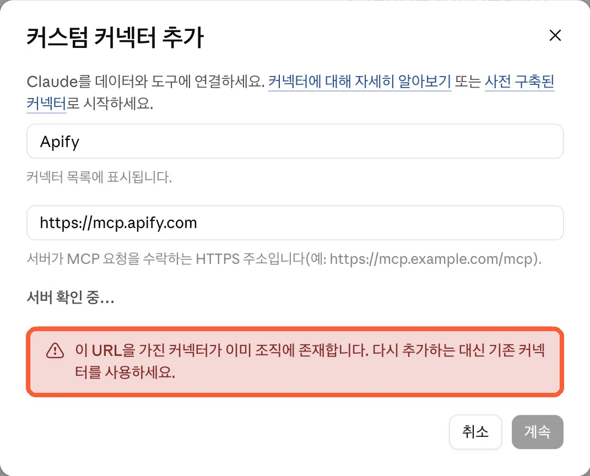
안 될 때는요? 채팅에서 + → 커넥터에 Apify가 켜져 있는지 먼저 보세요. 숫자가 비어 나오면 그 릴스가 조회 제한일 수 있어요. 다른 릴스로 다시 시도해 보세요.
공식 링크
- Apify MCP 문서: https://docs.apify.com/platform/integrations/mcp
- Instagram Reel Scraper: https://apify.com/apify/instagram-reel-scraper
- Apify 요금: https://apify.com/pricing
- Claude 커스텀 커넥터 도움말: https://support.claude.com/en/articles/11175166-getting-started-with-custom-connectors-using-remote-mcp
기준 날짜: 2026-10-07 · 만든 사람: @work__zero